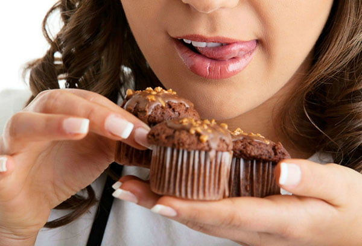

Леденцы, пирожные, кремовые торты, цукаты из экзотических фруктов – эти сладости настолько прочно вошли в нашу жизнь, что мы уже не представляем ее без очередной порции десерта. Но задумывались ли вы когда-нибудь о вреде сладкого? О том, что сахара портят наши зубы, кожу и органы? Если нет, тогда эта статья для вас. Сегодня мы поговорим о предполагаемом вреде сладких продуктов.

Для чего необходимы сладости?
Еще в школьные годы на уроках биологии нас учили тому, что сладкая еда – источник углеводов. А углеводы – это источник энергии, необходимой для работы человеческого организма. Соответственно, польза сладкого в том, что с его помощью человек получает энергию для своей жизнедеятельности. Из этого следует, что сахара – это полезные вещества? В этом вопросе есть свои нюансы. Для начала стоит разобраться с разновидностями углеводов и их предназначением.
Все углеводы можно поделить
- Простые – вещества, состоящие из одной или двух молекул сахаров. К моносахарам относят глюкозу, галактозу и фруктозу. К дисахаридам относят сахарозу и лактозу с мальтозой. Простые соединения перевариваются довольно быстро и в кратчайшие сроки насыщают человеческий организм энергией. Такие вещества необходимы спортсменам (в виде сахарозаменителей) для мышечного синтеза гликогена и детям, чтобы обеспечить энергией растущий организм.
- Сложные – представлены классом полисахаридов. Они состоят из сотен тысяч молекул моносахаров, при попадании в человеческий организм обеспечивают энергией и поддерживают метаболизм.
Иногда в отдельный вид выделяют клетчатку – ее относят к нерастворимым углеводам. Она необходима нашему организму, чтобы насыщать его и регулировать процессы обмена. Содержится в волокнах овощей и фруктов.
Рассмотрим пользу и вред всех видов сахаров с помощью таблицы.| Вид соединения | Польза для человека | Возможный вред |
|---|---|---|
| Моносахариды | Глюкоза является основным элементом всех видов сахаров. Она способствует быстрой доставке питательных веществ к клеткам, регулирует энергетический обмен. Галактоза способствует наполнению тканей энергией, что особенно важно для лиц, занимающихся физической активностью. Также она способна приводить к быстрой потере лишнего веса, а для взрослого населения может служить средством профилактики сахарного диабета. | Фруктоза может привести к расстройствам пищеварения и увеличению в крови количества липидов. |
| Дисахариды | Повышают работоспособность и способствуют улучшению памяти. Поднимают настроение. Лактоза улучшает всасывание кальция в кровь. Мальтоза помогает всасывать в кровь витамины группы В и аминокислоты. | Нарушают обмен веществ, способствуют разрушению зубной эмали. В детском возрасте переизбыток дисахаридов может привести к неврозам. Лактоза способна спровоцировать сильную аллергию у маленьких детей. |
| Полисахариды | Благодаря тому, что сложные соединения медленно перевариваются в тонком кишечнике, человек дольше чувствует насыщение. | Избыток углеводов может привести к лишнему весу. |
| Клетчатка | Благодаря тому, что клетчатка не переваривается организмом, она способствует очищению кишечника от остатков пищи и шлаков. | Чрезмерное употребление фруктов и овощей, богатых клетчаткой, может вызвать расстройства пищеварения и нарушение стула. |

Вред сладкого для взрослого человека
Каждый из нас хоть раз в жизни баловал себя вкусными продуктами – конфетами, пирожными или мармеладом. После употребления их в пищу получаешь восторг, эйфорию и ощущения умиротворения. Но чрезмерное употребление такой пищи чревато разрушительными последствиями для организма взрослого человека.
Быстрорастворимые сахара в больших количествах способны нарушить работу органов и систем довольно сильно. Чтобы не допустить развития серьезных патологий, стоит знать, к чему может привести бесконтрольное употребление сладостей.
- Сахарный диабет. Болезнь возникает как ответ на постоянную нагрузку поджелудочной железы. При чрезмерном употреблении сладкого поджелудочная железа начинает вырабатывать большое количество гормона инсулина, который усиленно перерабатывает глюкозу. Получается замкнутый круг. Тем не менее, больным сахарным диабетом всегда советуют иметь при себе сладкую конфету, чтобы после инъекций инсулина восстановить баланс сахаров в крови
- Кариес и другие заболевания полости рта. Сладкая пища – наилучший источник питания микроорганизмов. Если постоянно употреблять конфеты и сладкие напитки, то кариес обеспечен. Чтобы предотвратить размножение бактерий, перед приемом очередной порции сладостей почистите зубы, а после прополощите рот или погрызите морковь.
- Большое количество сладкой пищи приводит к развитию патогенной микрофлоры в кишечнике. Под воздействием сладкой среды микрофлора активно размножается и начинает пагубно воздействовать на стенки кишечника, вызывая расстройства пищеварения. В тяжелых случаях неконтролируемый прием сладостей становится причиной развития язвенного колита. А колит без надлежащего лечения может спровоцировать раковую опухоль
- Возникновение сильных аллергических реакций. Дело в том, что современные сладости, особенно пользующиеся популярностью, изготавливаются с добавлением различных химических соединений – красителей, консервантов, загустителей. Они очень вредны для органов и тканей, могут спровоцировать аллергию, нарушения работы органов. В некоторых случаях употребление таких добавок может стать пусковым механизмом для образования раковых клеток.
Как взрослому человеку бороться с этими патологиями? Необходимо придерживаться простых правил.
- Ограничьте употребление сладких продуктов до одной суточной порции. Разрешенное количество – это около 30-50 г сахара. Такое количество сладости содержится в 5-10 чайных ложках сахарного песка или одной бутылке газированного напитка. Примерно это же количество чистого сахара содержится в 500 граммах сладких фруктов или в половине шоколадной плитки.
- Пейте достаточное количество чистой воды. Вода – лучший катализатор обменных процессов в человеческом организме.
- Занимайтесь физическими нагрузками. Спорт – это лучшее средство, чтобы убрать лишние калории и нормализовать обменные процессы в организме.
- Отдавайте предпочтение натуральным сладостям хорошего качества, а не дешевым карамелькам и молочным плиткам.
- При предрасположенности организма к патологиям внутренних органов (например, если родители болели гипертонической болезнью или сахарным диабетом) стоит ограничить потребление сладкого. При такой наследственности вероятность заболеть довольно высокая.